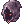

Par: MageGaHell, Myllena, Cid
Description: Deux évènements créés pour Halloween, liés entre eux.
Description donnée aux joueurs: Le Seigneur de la Mort est en visite au royaume de Rune-Midgard, et demande à leurs habitants de retrouver et convaincre les douze âmes égarées d'accepter de retourner au royaume des morts...
Horlamin Chorster, le célèbre costumier, est par ailleurs en déplacement exceptionnel à Payon.
Venez vite découvrir ces deux events! Ils dureront une semaine à partir du soir d'Halloween, du 31 octobre à la semaine suivante.
Nécessite l'ajout d'items custom (voir ci-dessous)
Une map custom peut être ajoutée (voir ci-dessous)
Description étendue:
Une première quête (auprès du Seigneur de la Mort) permet d'obtenir, au choix, l'un des deux chapeaux custom suivants. Ces chapeaux custom sont sans effets (purement décoratifs).Le but de la quête est de retrouver douze âme égarées, sous forme de NPC, et de les convaincre de retourner au royaume des morts via une mini-quête associée à chaque âme. A la fin de la quête, le joueur choisit sa récompense:
Drap de Fantôme |
Capuche de Bourreau  |
Parallèlement, un déguiseur est disponible. Il propose de déguiser les joueurs en monstres, mais la liste de déguisements disponibles augmente de façon croissante par rapport à l'avancement de la quête du Seigneur de la Mort.
- Familiar 1005 > de base, accessible même si on n'a pas retrouvé d'âme
- Whisper 1179 > 1 âme retrouvée
- Lude 1509 > 2 âmes retrouvées
- Quve 1508 > 3 âmes retrouvées
- Disguise 1506 > 4 âmes retrouvées
- Hylozoist 1510 > 5 âmes retrouvées
- Deveruchi 1109 > 6 âmes retrouvées
- Jack 1130 > 7 âmes retrouvées
- Skeleton Prisoner 1196 > 8 âmes retrouvées
- Gibbet 1503 > 9 âmes retrouvées
- Dulhalan 1504 > 10 âmes retrouvées
- Loli Ruri 1505 > 11 âmes retrouvées
- Bloody Murderer 1507 > 12 âmes retrouvées
Si vous le souhaitez, vous pouvez ajouter une map custom. Il s'agit de la ville de Payon et de la ville de Prontera modifiées aux couleurs d'Halloween, retouchées par Clad, et disponibles dans le répertoire maps_custom. Apperçu:


Si vous souhaitez utiliser ce script, un certain nombre d'items custom doivent être ajoutés.
1. A ajouter dans item_db2.txt
//event halloween
20928,Capuche_de_Bourreau,Capuche de Bourreau,5,20,,200,,0,,0,0xFFFFFFFF,7,2,256,,0,1,326,{},{},{}
20929,Drap_de_Fantôme,Drap de Fantôme,5,20,,200,,0,,0,0xFFFFFFFF,7,2,256,,0,1,321,{},{},{}
2. A ajouter dans num2itemdisplaynametable.txt (et idnum2itemdisplaynametable.txt)
20928#Capuche_de_Bourreau#
20929#Drap_de_Fantôme#
3. A ajouter à num2itemdesctable.txt (et idnum2itemdesctable.txt)
#
20928#
Déguisement d'Halloween. Ne provoque aucun effet à part causer la frayeur chez vos amis.
^ffffff_^000000
#
20929#
Déguisement d'Halloween. Ne provoque aucun effet à part causer la frayeur chez vos amis.
^ffffff_^000000
#
4. A ajouter à num2itemresnametable.txt (et idnum2itemresnametable.txt)
20928#¸Í¸ñ¸ð#
20929#À§½ºÆÛ¸¶½ºÅ©#